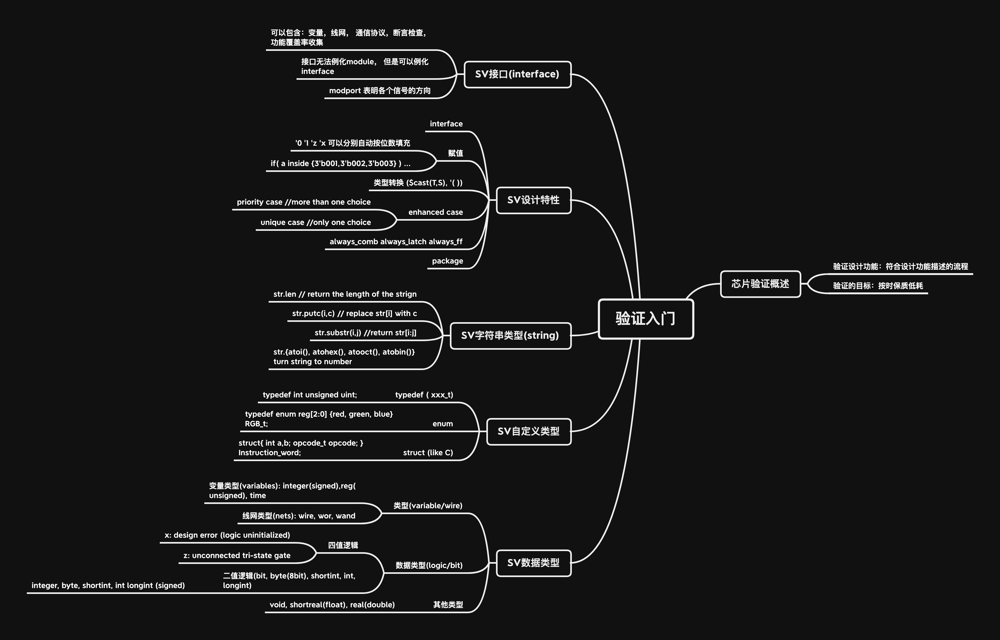
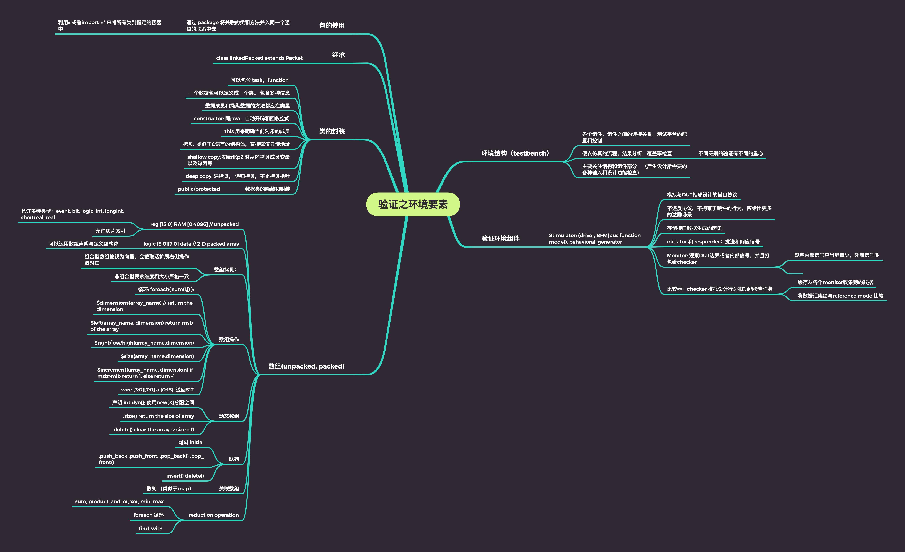
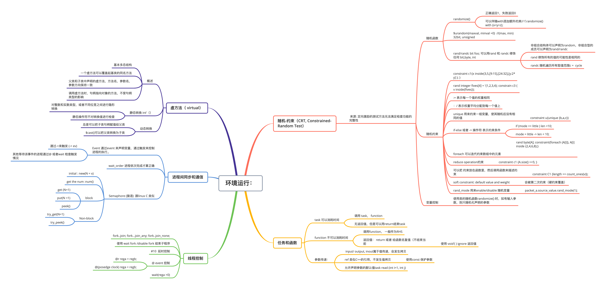

最近在学从SV到UVM的基础部分，会不定时更新系列知识点的思维导图总结。（麦屯VLSI的课竟然那么少，，，学点验证把）
万物始于数据结构：
1. 本章内容就觉得接口有点意思，可以内嵌很多内容，包括定义以及协议检查等。有意思的是硬件存在1，0，x, z四种逻辑，而软件只有两种。
2. 注意下 assign 可以传递x 和z， 而if 不可以。 所以在552课上做小 CPU demo 时老师把 if-else 禁了，，，后来看手把手教你设计CPU Risc-V 的时候看到作者有讲这点才懂。
不过不让用always 时序设计（全部用例化标准DFF） 和if 的verilog 有点像数电的连线实验课，其实还挺有意思。

面向对象的SV:
1. 类的封装 继承 xxxx就不详细叙述了，我也是小白，，，C；
2. 数组的组合型和非组合型：
a. 索引在数组名后方时，定义非组合型/非合并型（unpacked）
bit [7:0] array1 [3] // 其中 bit[7:0]是向量长度，后面[3]是索引
b. 索引在数组前面时，定义组合型数组（packed）
组合型数组存储是连续的，常常被视为向量
此外还有混合数组等，仔细理解下其索引方式和内存结构就好了。注意，非合并数组好形象是32bit（long int 是64bit） 一个单位，就算你只用了一个byte 也占32bit（Oh no，，，）

随机约束以及虚函数
1. 随机约束是验证中比较重要的一个部分，但是函数和方法本身不难，难点应该在设计验证过程中找出正确的约束条件。
2. 线程控制也没啥内容，跟linux 多线程编程差不多，而且应该是不可综合的。 具体内容Semphare 什么基本一致，有空整理整理537的内容。
3. 虚方法的话大家应该都比较熟悉了，，选门OO的课就好了2333

未完待续。。。